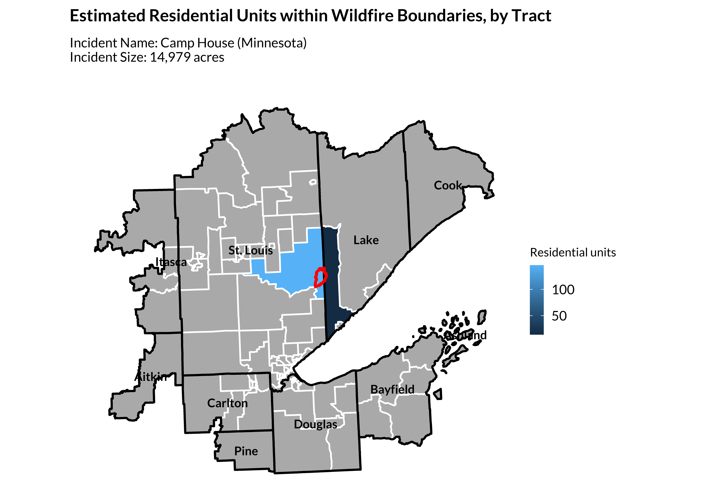
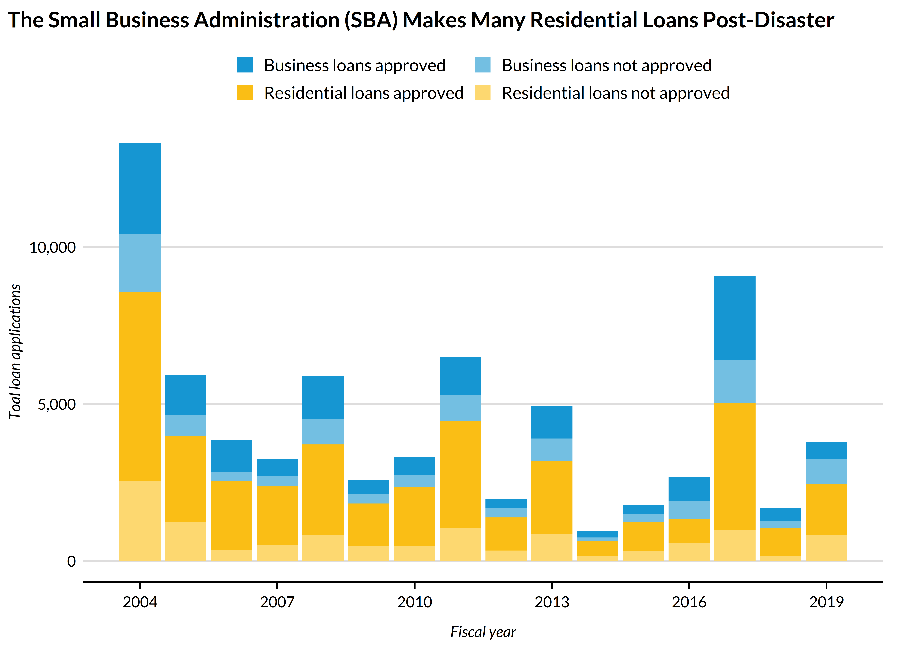
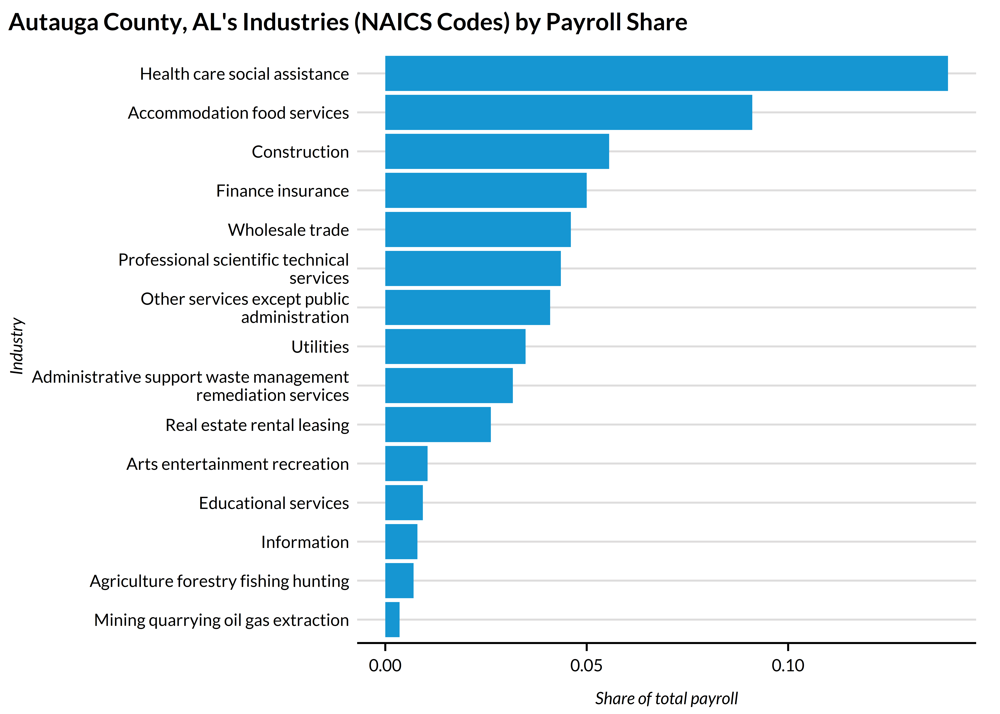
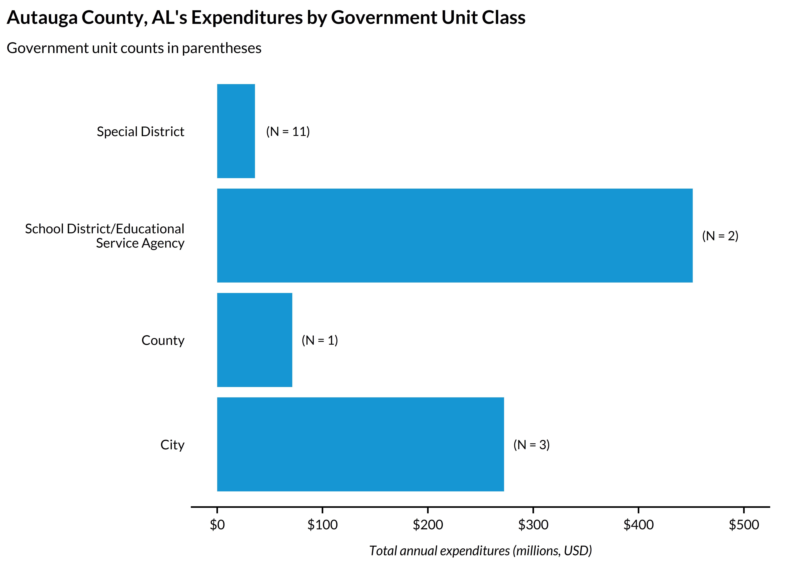
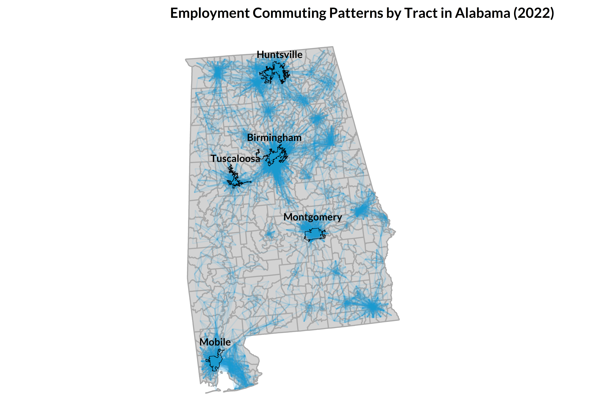

The goal of library(climateapi) is to minimize repeated data cleaning and wrangling to enable project teams to devote more time to substantive analysis and inference-making. The package works toward this goal by creating a unified interface to common datasets and data manipulation tasks. Functions (will) support both climate-specific datasets as well as those that are climate-adjacent.
Installation
You can install the development version of climateapi from GitHub with:
# install.packages("renv")
renv::install("UI-Research/climateapi")The climateapi package at work:
library(climateapi)
library(urbnindicators)
library(sf)
library(tidyverse)
library(urbnthemes)
set_urbn_defaults(style = "print")ACS Housing and Demographics
Capacity for interacting with data from the American Community Survey is housed in an adjacent package, urbnindicators.
Visit that package’s webpage and documentation to learn more.
Major Disaster Declarations
county_disaster_declarations = get_fema_disaster_declarations_county(api = TRUE)
county_disaster_declarations %>%
filter(stringr::str_detect(GEOID, "^01")) %>% ## Alabama
group_by(year_declared) %>%
summarize(annual_incidents = sum(incidents_all, na.rm = TRUE)) %>%
ggplot() +
geom_col(aes(x = year_declared, y = annual_incidents)) +
annotate("text", x = 2016.5, y = 132, label = "COVID-19 pandemic" %>% str_wrap(10), fontface = "bold") +
labs(
title = "COVID Results in a Spike of Counties with Disaster Declarations in 2020",
subtitle = "Sum of major disaster declarations per Alabama county, by year",
x = "",
y = "") +
theme_urbn_print()
Wildfire Perimeters and Structures
## take the largest active fire
wildfire_perimeters = get_current_fire_perimeters() %>%
dplyr::arrange(desc(incident_size_acres)) %>%
dplyr::slice(1) %>%
sf::st_transform(5070) %>%
sf::st_make_valid()
## a two-item list
## the first item contains tract-level structure estimates
## the second contains the structure points
impacted_structures = get_structures(
boundaries = wildfire_perimeters,
geography = "tract",
keep_structures = TRUE)
#> | | | 0% | |== | 2% | |==== | 5% | |==== | 6% | |===== | 7% | |===== | 8% | |====== | 8% | |====== | 9% | |======= | 10% | |======= | 11% | |======== | 11% | |======== | 12% | |========= | 13% | |========= | 14% | |========== | 14% | |========== | 15% | |=========== | 15% | |=========== | 16% | |============ | 17% | |============ | 18% | |============= | 18% | |============= | 19% | |============== | 20% | |============== | 21% | |=============== | 21% | |=============== | 22% | |================ | 23% | |================= | 24% | |================= | 25% | |================== | 25% | |================== | 26% | |==================== | 29% | |======================= | 32% | |======================== | 34% | |========================= | 35% | |========================= | 36% | |========================== | 37% | |=========================== | 38% | |============================== | 44% | |================================ | 45% | |================================ | 46% | |================================= | 47% | |================================== | 48% | |=================================== | 50% | |==================================== | 51% | |==================================== | 52% | |===================================== | 53% | |======================================= | 55% | |========================================== | 61% | |============================================ | 62% | |============================================ | 63% | |============================================= | 64% | |=============================================== | 67% | |================================================ | 68% | |================================================ | 69% | |================================================= | 70% | |================================================== | 71% | |================================================== | 72% | |=================================================== | 72% | |===================================================== | 76% | |====================================================== | 77% | |====================================================== | 78% | |======================================================= | 78% | |======================================================= | 79% | |======================================================== | 79% | |======================================================== | 80% | |========================================================= | 81% | |========================================================= | 82% | |=========================================================== | 84% | |=========================================================== | 85% | |============================================================ | 85% | |============================================================ | 86% | |============================================================= | 87% | |============================================================== | 88% | |=============================================================== | 90% | |================================================================ | 91% | |================================================================= | 92% | |================================================================= | 93% | |================================================================== | 94% | |================================================================== | 95% | |=================================================================== | 95% | |==================================================================== | 96% | |======================================================================| 100%
#> Reading layer `AZ_Structures' from data source
#> `C:\Users\wcurrangroome\Box\METRO Climate and Communities Practice Area\github-repository\built-environment\housing-units\usa-structures\raw\AZ\Deliverable20230502AZ\AZ_Structures.gdb'
#> using driver `OpenFileGDB'
#> Simple feature collection with 2701791 features and 28 fields
#> Geometry type: MULTIPOLYGON
#> Dimension: XY
#> Bounding box: xmin: -114.8118 ymin: 31.33255 xmax: -109.0454 ymax: 37.00252
#> Geodetic CRS: WGS 84
#> | | | 0% | |== | 3% | |===== | 7% | |====== | 8% | |====== | 9% | |======= | 10% | |======== | 11% | |======== | 12% | |========= | 13% | |================= | 24% | |================== | 26% | |===================== | 30% | |======================= | 33% | |======================== | 34% | |========================= | 35% | |========================== | 37% | |============================ | 41% | |=============================== | 45% | |================================ | 46% | |================================== | 49% | |=================================== | 50% | |===================================== | 53% | |====================================== | 54% | |=========================================== | 61% | |============================================== | 65% | |================================================ | 68% | |================================================ | 69% | |================================================= | 71% | |==================================================== | 75% | |===================================================== | 76% | |======================================================= | 79% | |========================================================= | 81% | |========================================================== | 83% | |=========================================================== | 84% | |============================================================ | 86% | |============================================================== | 88% | |=============================================================== | 90% | |================================================================ | 91% | |================================================================= | 92% | |=================================================================== | 95% | |==================================================================== | 96% | |==================================================================== | 98% | |======================================================================| 100%
us_tracts_sf = tigris::tracts(cb = TRUE, year = 2023, progress_bar = FALSE) %>%
sf::st_transform(5070)
tracts_sf = us_tracts_sf %>%
sf::st_filter(wildfire_perimeters %>% st_transform(5070) %>% st_buffer(100000)) %>%
dplyr::select(GEOID) %>%
dplyr::left_join(
impacted_structures[[1]] %>%
dplyr::filter(occupancy_class == "Residential") %>%
dplyr::group_by(GEOID) %>%
dplyr::summarize(residential_units = sum(count, na.rm = TRUE)),
by = "GEOID") %>%
dplyr::mutate(county_fips = stringr::str_sub(GEOID, 1, 5)) %>%
dplyr::left_join(
tidycensus::fips_codes %>%
dplyr::mutate(county_fips = stringr::str_c(state_code, county_code)),
by = c("county_fips"))
counties_sf = tracts_sf %>%
dplyr::group_by(county_fips, county) %>%
dplyr::summarize() %>%
dplyr::ungroup() %>%
dplyr::mutate(county = county %>% stringr::str_remove((" County")))
ggplot2::ggplot() +
geom_sf(data = tracts_sf, ggplot2::aes(fill = residential_units), linewidth = .6) +
ggplot2::scale_fill_continuous(na.value = "darkgrey") +
ggplot2::geom_sf(data = counties_sf, fill = NA, color = "black", linewidth = .75) +
ggplot2::geom_sf_text(data = counties_sf, color = "black", ggplot2::aes(label = county), fontface = "bold", size = 3) +
ggplot2::geom_sf(data = wildfire_perimeters, fill = NA, color = "red", linewidth = 1) +
ggplot2::labs(
title = "Estimated Residential Units within Wildfire Boundaries, by Tract",
subtitle = stringr::str_c(
"Incident Name: ", wildfire_perimeters$incident_name, " (",
paste(
tracts_sf %>%
dplyr::filter(!is.na(residential_units)) %>%
dplyr::distinct(state_name) %>%
dplyr::pull(), collapse = ", "), ") \n",
"Incident Size: ", (round(wildfire_perimeters$incident_size_acres, 0) %>% scales::comma()), " acres", "\n"),
fill = "Residential units") +
urbnthemes::theme_urbn_map()
SBA Disaster Loans
sba_disaster_declarations = get_sba_loans()
sba_disaster_declarations %>%
dplyr::mutate(
fiscal_year = as.numeric(fiscal_year),
sba_approved = dplyr::if_else(approved_amount_total > 0, 1, 0)) %>%
## some records, especially those from 2020 onwards, have NA values for approved fields
## for that reason, we'll only look at years predating 2020
## we're also going to exclude FY 2000--there are records for this year, but none
## for the following three years, suggesting some... irregularities in the data
dplyr::filter(
!is.na(sba_approved),
fiscal_year > 2000,
fiscal_year < 2020) %>%
dplyr::group_by(loan_type, sba_approved, fiscal_year) %>%
dplyr::summarize(count = dplyr::n()) %>%
dplyr::ungroup() %>%
dplyr::mutate(
fill = dplyr::case_when(
loan_type == "business" & sba_approved == 1 ~ "Business loans approved",
loan_type == "business" & sba_approved == 0 ~ "Business loans not approved",
loan_type == "residential" & sba_approved == 1 ~ "Residential loans approved",
loan_type == "residential" & sba_approved == 0 ~ "Residential loans not approved")) %>%
ggplot2::ggplot() +
ggplot2::geom_col(ggplot2::aes(x = fiscal_year, y = count, fill = fill)) +
ggplot2::labs(
title = "The Small Business Administration (SBA) Makes Many Residential Loans Post-Disaster",
x = "Fiscal year",
y = "Toal loan applications") +
ggplot2::scale_fill_manual(
values = c(
"Business loans approved" = palette_urbn_cyan[5] %>% as.character,
"Business loans not approved" = palette_urbn_cyan[3] %>% as.character,
"Residential loans approved" = palette_urbn_yellow[5] %>% as.character,
"Residential loans not approved" = palette_urbn_yellow[3] %>% as.character)) +
ggplot2::scale_y_continuous(labels = scales::comma) +
ggplot2::scale_x_continuous(breaks = seq(2004, 2019, 3)) +
ggplot2::guides(fill = ggplot2::guide_legend(nrow = 2, byrow = TRUE))
County Business Patterns
business_patterns = get_business_patterns()
business_patterns %>%
dplyr::filter(employee_size_range_code == "001") %>% ## all sizes
dplyr::group_by(state, county) %>%
dplyr::mutate(
industry_share_payroll = annual_payroll / annual_payroll[industry == "total"]) %>%
dplyr::filter(industry != "total") %>%
dplyr::ungroup() %>%
dplyr::filter(state == "01", county == "001") %>%
dplyr::mutate(industry = industry %>% janitor::make_clean_names(case = "sentence") %>% stringr::str_wrap(40)) %>%
ggplot2::ggplot() +
ggplot2::geom_col(ggplot2::aes(y = stats::reorder(industry, industry_share_payroll), x = industry_share_payroll)) +
ggplot2::labs(
x = "Share of total payroll",
y = "Industry",
title = "Autauga County, AL's Industries (NAICS Codes) by Payroll Share")
Government Expenses
government_finances = get_government_finances()
government_finances %>%
dplyr::filter(state_code == "01", county_code == "001") %>%
dplyr::group_by(government_type) %>%
dplyr::summarize(
amount_millions = sum(amount_thousands, na.rm = TRUE) / 1000,
count = dplyr::n()) %>%
ggplot2::ggplot(aes(y = stats::reorder(government_type, amount_millions) %>% stringr::str_wrap(30), x = amount_millions)) +
ggplot2::geom_col() +
ggplot2::geom_text(ggplot2::aes(label = stringr::str_c("(N = ", count, ")")), hjust = -.25) +
ggplot2::labs(x = "Total annual expenditures (millions, USD)",
y = "",
title = "Autauga County, AL's Expenditures by Government Unit Class",
subtitle = "Government unit counts in parentheses") +
ggplot2::scale_x_continuous(labels = scales::dollar, limits = c(0, 500)) +
ggplot2::theme(panel.grid.major = ggplot2::element_blank())
LEHD Origin Destination Employment Statistics (LODES)
lodes = get_lodes(
lodes_type = "od",
jobs_type = "all",
states = "AL",
years = 2022,
geography = "tract",
## for simplicity, considering only workers who live and work in AL
state_part = "main") %>%
## federal jobs are broken out separately in case users need to standardize
## all-jobs counts over time, but this doesn't apply here
dplyr::filter(job_type == "all")
al_tracts = us_tracts_sf %>%
dplyr::filter(GEOID %>% str_sub(1,2) == "01") %>%
dplyr::select(GEOID) %>%
sf::st_transform(5070)
al_centroids = al_tracts %>%
sf::st_centroid() %>%
sf::st_transform(5070) %>%
sf::st_coordinates() %>%
tibble::as_tibble() %>%
cbind(al_tracts$GEOID) %>%
dplyr::rename(
x = X,
y = Y,
GEOID = 3)
major_al_cities = tidycensus::get_acs(
geography = "place",
variables = c(population = "B01003_001"),
year = 2022,
output = "wide",
state = "AL",
geometry = TRUE) %>%
dplyr::slice_max(populationE, n = 5) %>%
dplyr::transmute(
NAME = NAME %>%
stringr::str_remove_all("CDP|city|town|,|Alabama") %>%
stringr::str_squish() %>%
stringr::str_trim())
#> | | | 0% | |====== | 9% | |==================== | 28% | |================================= | 47% | |=============================================== | 67% | |============================================================ | 86% | |======================================================================| 100%
lodes %>%
dplyr::select(dplyr::matches("GEOID"), total_jobs) %>%
dplyr::left_join(al_centroids, by = c("h_GEOID" = "GEOID")) %>%
dplyr::left_join(al_centroids %>% dplyr::rename(xend = x, yend = y), by = c("w_GEOID" = "GEOID")) %>%
filter(total_jobs > 20) %>%
ggplot() +
geom_sf(data = al_tracts, fill = "lightgrey", color = "darkgrey", linewidth = .5) +
geom_segment(
aes(x = x, y = y, xend = xend, yend = yend), color = palette_urbn_main[1], alpha = .1) +
geom_sf(data = major_al_cities, fill = NA, color = "black") +
geom_sf_text(data = major_al_cities, aes(label = NAME), size = 3, , fontface = "bold", color = "black", vjust = -2) +
theme_urbn_map() +
labs(title = "Employment Commuting Patterns by Tract in Alabama (2022)")